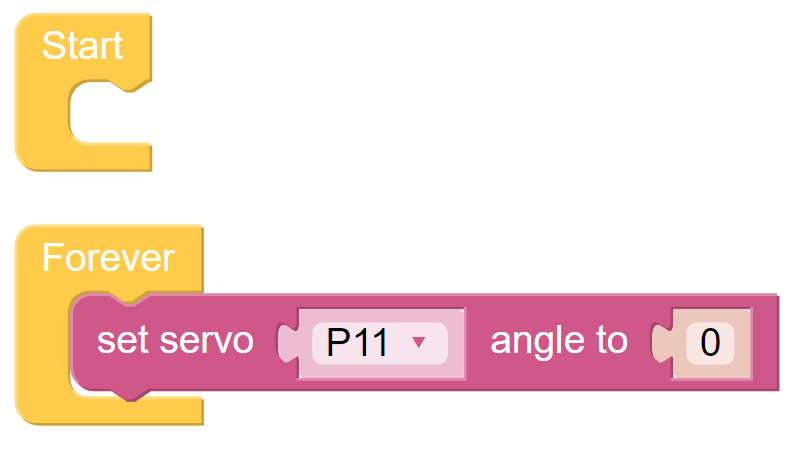
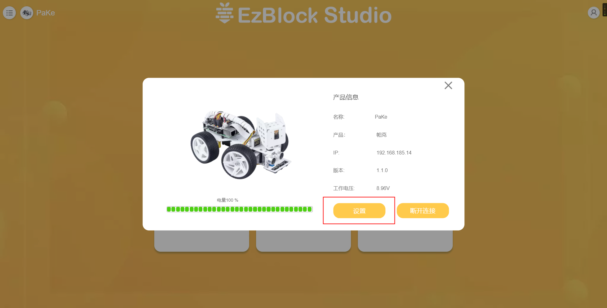

疑难解答¶
当使用VNC时，我被提示桌面暂时无法显示？¶
在终端，输入
sudo raspi-config来改变分辨率。
安装EzBlock操作系统后，舵机不能转到0°？¶

检查伺服电缆是否正确连接，Robot HAT的电源是否打开。
按下复位按钮。
如果您已经在EzBlock Studio中运行了程序，那么P11的自定义程序就不再可用。您可以参考下图，在EzBlock Studio中手动编写程序，将伺服角度设置为0。
如何在EzBlock重新校准机器人¶
在首页，点击左上角的产品连接图标。

进入到产品页面之后，点击 设置 按钮。
进入设置页面后，点击 校准 按钮就能进入到校准页面，然后按照提示来校准。

EzBlock无法连接蓝牙？¶
先检查是否有给你的SD卡烧录 安装EzBlock镜像。
打开产品的电源开关后，等蓝牙指示灯变得更亮并且出现”zi~”声后，代表树莓派成功启动，此时再去连接。
检查您的移动设备的蓝牙是否打开。
检查EzBlock是否被允许访问设备的位置。
有些移动设备还需要打开位置服务。
检查电池电量。如果两个电源指示灯都关闭，或者只有一个指示灯在闪烁；电源电量低，请给电池充电。
如果以上方法都试过了，请尝试按下RST按钮，或重新启动产品和APP。
APP搜索到蓝牙，但无法连接¶
先检查是否有给你的SD卡烧录 安装EzBlock镜像。
打开产品的电源开关后，等蓝牙指示灯变得更亮并且出现”zi~”声后，代表树莓派成功启动，此时再去连接。
检查ROBOT HAT上的BLE或USR灯是否一直亮着（这意味着产品被其他设备连接），如果是，请断开其他设备的连接或重新启动产品。
如果以上方法都试过了，请尝试按下RST按钮，或者重新启动产品和APP。
配置WIFI后APP无法连接¶
检查国家、账号和密码是否正确。
检查该WIFI的网络状态。
检查电源电量。如果两个电源指示灯都熄灭或只有一个电源指示灯闪烁，则说明电源电量不足，请给电池充电。
检查配置的WiFi和移动设备连接的WiFi是否相同。
为什么伺服机有时会无缘无故地返回到中间位置？¶
当舵机被结构物或其他物体挡住，无法到达预定位置时，舵机会进入断电保护模式，以防止舵机被过大的电流烧坏。
断电一段时间后，如果没有给伺服机提供PWM信号，伺服机将自动恢复到原来的位置。